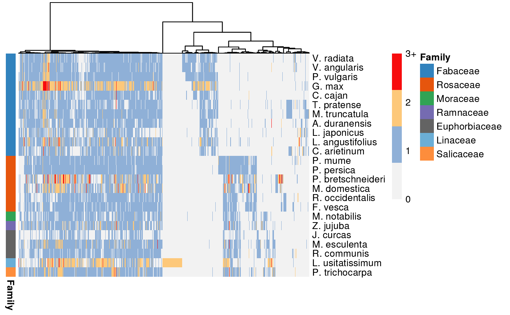
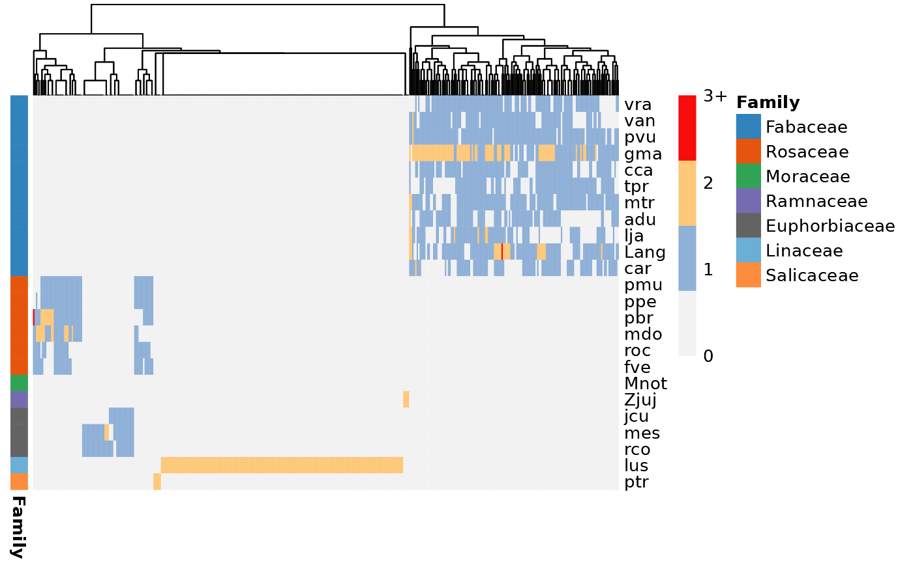
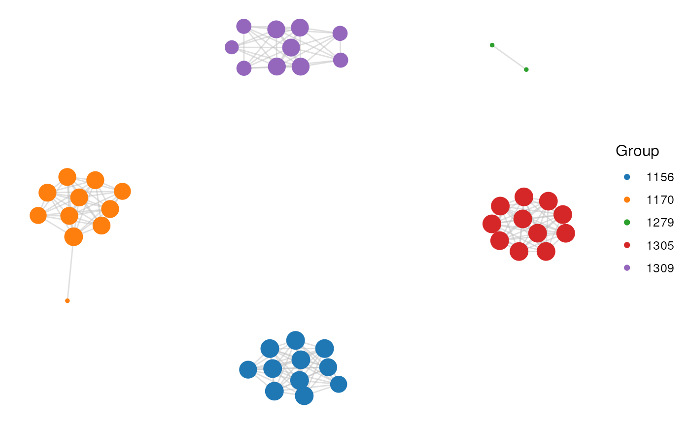
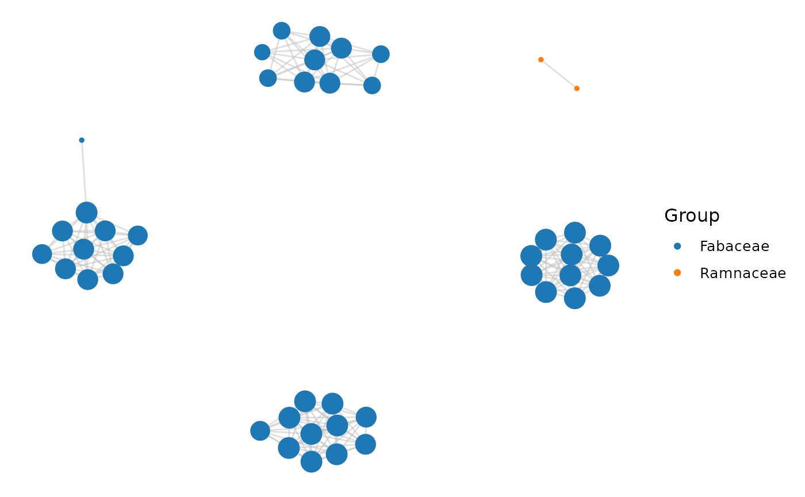
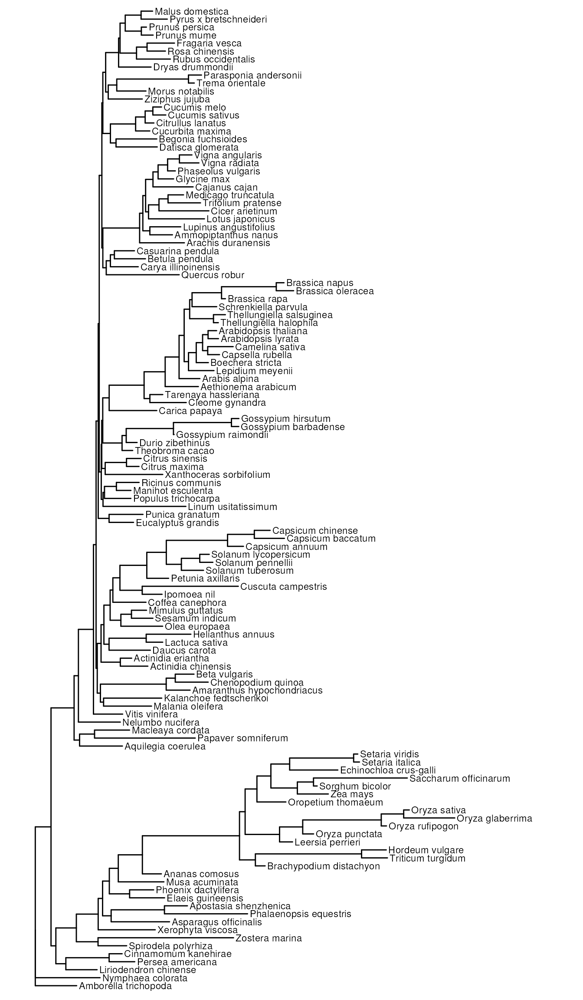

Inference and Analysis of Synteny Networks
Fabricio Almeida-Silva
VIB-UGent Center for Plant Systems Biology, Ghent, BelgiumDepartment of Plant Biotechnology and Bioinformatics, Ghent University, Ghent, BelgiumTao Zhao
State Key Laboratory of Crop Stress Biology for Arid Areas/Shaanxi Key Laboratory of Apple, College of Horticulture, Northwest A&F University, Yangling, ChinaKristian K Ullrich
Department of Evolutionary Biology, Max Planck Institute For Evolutionary Biology, Ploen, GermanyYves Van de Peer
VIB-UGent Center for Plant Systems Biology, Ghent, BelgiumDepartment of Plant Biotechnology and Bioinformatics, Ghent University, Ghent, BelgiumCollege of Horticulture, Academy for Advanced Interdisciplinary Studies, Nanjing Agricultural University, Nanjing, ChinaCenter for Microbial Ecology and Genomics, Department of Biochemistry, Genetics and Microbiology, University of Pretoria, Pretoria, South AfricaSource:
vignettes/syntenet.Rmd
syntenet.RmdIntroduction
The analysis of synteny (i.e., conserved gene content and order in a genomic segment across species) can help understand the trajectory of duplicated genes through evolution. In particular, synteny analyses are widely used to investigate the evolution of genes derived from whole-genome duplication (WGD) events, as they can reveal genomic rearrangements that happened following the duplication of all chromosomes. However, synteny analysis are typically performed in a pairwise manner, which can be difficult to explore and interpret when comparing several species. To understand global patterns of synteny, Zhao and Schranz (2017) proposed a network-based approach to analyze synteny. In synteny networks, genes in a given syntenic block are represented as nodes connected by an edge. Synteny networks have been used to explore, among others, global synteny patterns in mammalian and angiosperm genomes (Zhao and Schranz 2019), the evolution of MADS-box transcription factors (Zhao et al. 2017), and infer a microsynteny-based phylogeny for angiosperms (Zhao et al. 2021). syntenet is a package that can be used to infer synteny networks from protein sequences and perform downstream network analyses that include:
Network clustering using the Infomap algorithm;
Phylogenomic profiling, which consists in identifying which species contain which clusters. This analysis can reveal highly conserved synteny clusters and taxon-specific ones (e.g., family- and order-specific clusters);
Microsynteny-based phylogeny reconstruction with maximum likelihood, which can be achieved by inferring a phylogeny from a binary matrix of phylogenomic profiles with IQ-TREE.
Installation
syntenet can be installed from Bioconductor with the following code:
if(!requireNamespace('BiocManager', quietly = TRUE))
install.packages('BiocManager')
BiocManager::install("syntenet")Data description
For this vignette, we will use the proteomes and gene annotation of the algae species Ostreococcus lucimarinus and Ostreococcus sp RCC809, which were obtained from Pico-PLAZA 3.0 (Vandepoele et al. 2013).
# Protein sequences
data(proteomes)
head(proteomes)
#> $Olucimarinus
#> AAStringSet object of length 1901:
#> width seq names
#> [1] 911 MTTMADERASIARVSVVKYGAI...VQLYTYPGSTNDPNFLLKLA* OL01G00010
#> [2] 789 MGGRRCFCSRSSPVGVGAPAPA...PPQCGADIEAGSEPPPDKCG* OL01G00020
#> [3] 618 MTRAKDAIVVDDGNDDDDDDDD...RDASASLALALAFSSEESVV* OL01G00030
#> [4] 547 MPTKAQCWVVSYARVRDGASRS...TGSVSARASIFGEQASFRKA* OL01G00040
#> [5] 319 MFTASHTTSKVTLRARVATQPR...HNGMALWRETTPKDSLIPAL* OL01G00050
#> ... ... ...
#> [1897] 106 MAANDGETKLPEDGWIQPCFAC...RAIVDQVGGEHLKGSLMPIE* OL03G05910
#> [1898] 70 RMGIVKLATDGSVWVHSPIELD...QQWKDAYPGATLYACPGLKSK OL03G05920
#> [1899] 680 MDDAHDARWATTSARDGERARA...RSVGPSASDKILEALFPVAD* OL03G05930
#> [1900] 179 MRAVRERSKANLAARVKEEATR...ELERTRELFARARVRAYECI* OL03G05940
#> [1901] 83 MFVREARRAIPRFIKDPPQAFH...ESGDVRSVEGEVCGAVLVDE* OL03G05950
#>
#> $OspRCC809
#> AAStringSet object of length 1433:
#> width seq names
#> [1] 274 MASTTGSAARRVFVDVEKTVNG...DVLSLGQGSLSGESSSSDEE* ORCC809_01G00010
#> [2] 175 MDQMRAANAQRSYLLFFVLFFL...SRRLLGRLDSEHTDLHPSWR* ORCC809_01G00020
#> [3] 403 MTAPRVRASRRATATAAATVTA...LTERDLRYMEPKATIEEWMG* ORCC809_01G00030
#> [4] 217 MTIDADGDDTLAPHAPAHGEVS...LIRLRGVEKTPTVDPPPPPP* ORCC809_01G00040
#> [5] 1691 RIEADEKSLLVFGKESPVRTAC...VRMGNNVVTSRYASSESEEDV ORCC809_01G00050
#> ... ... ...
#> [1429] 428 MVDANATTQTFVLEAEQELRVE...DLPSNVLLVGNLKWLGEDGK* ORCC809_03G02980
#> [1430] 378 MSVPRTTLRRIPLGNARDVLVT...ETLKAIDAVHAQCRDPCIAT* ORCC809_03G02990
#> [1431] 1156 MRATSAPSIVSFVARVACLFVA...CAFGTSLASFVVERARRLEN* ORCC809_03G03000
#> [1432] 541 MAITVFLTDHGRRASALTFLVV...GFGVGAVKFMLAPEMVKSLA* ORCC809_03G03010
#> [1433] 289 MSLSSLRSFSRSISSAPGGRSC...EPEEPEPEEPEPEEPEEPEP* ORCC809_03G03020
# Annotation (ranges)
data(annotation)
head(annotation)
#> GRangesList object of length 2:
#> $Olucimarinus
#> GRanges object with 1903 ranges and 4 metadata columns:
#> seqnames ranges strand | type ID Name
#> <Rle> <IRanges> <Rle> | <factor> <character> <character>
#> [1] Chr_1 939-3671 - | gene OL01G00010 OL01G00010
#> [2] Chr_1 3907-6927 + | gene OL01G00020 OL01G00020
#> [3] Chr_1 7085-9160 + | gene OL01G00030 OL01G00030
#> [4] Chr_1 9830-11480 + | gene OL01G00040 OL01G00040
#> [5] Chr_1 11467-12599 - | gene OL01G00050 OL01G00050
#> ... ... ... ... . ... ... ...
#> [1899] Chr_3 977435-977752 - | gene OL03G05910 OL03G05910
#> [1900] Chr_3 978702-978911 - | gene OL03G05920 OL03G05920
#> [1901] Chr_3 979281-981320 - | gene OL03G05930 OL03G05930
#> [1902] Chr_3 981778-982314 + | gene OL03G05940 OL03G05940
#> [1903] Chr_3 982498-982746 + | gene OL03G05950 OL03G05950
#> gene_id
#> <character>
#> [1] OL01G00010
#> [2] OL01G00020
#> [3] OL01G00030
#> [4] OL01G00040
#> [5] OL01G00050
#> ... ...
#> [1899] OL03G05910
#> [1900] OL03G05920
#> [1901] OL03G05930
#> [1902] OL03G05940
#> [1903] OL03G05950
#> -------
#> seqinfo: 6 sequences from an unspecified genome; no seqlengths
#>
#> $OspRCC809
#> GRanges object with 1433 ranges and 4 metadata columns:
#> seqnames ranges strand | type ID
#> <Rle> <IRanges> <Rle> | <factor> <character>
#> [1] chr_1 321-1142 - | gene ORCC809_01G00010
#> [2] chr_1 1463-2089 + | gene ORCC809_01G00020
#> [3] chr_1 2162-3370 - | gene ORCC809_01G00030
#> [4] chr_1 3774-4424 - | gene ORCC809_01G00040
#> [5] chr_1 4693-9924 - | gene ORCC809_01G00050
#> ... ... ... ... . ... ...
#> [1429] chr_3 504915-506198 - | gene ORCC809_03G02980
#> [1430] chr_3 506377-507510 + | gene ORCC809_03G02990
#> [1431] chr_3 507856-511323 + | gene ORCC809_03G03000
#> [1432] chr_3 511533-513155 - | gene ORCC809_03G03010
#> [1433] chr_3 513841-514707 + | gene ORCC809_03G03020
#> Name gene_id
#> <character> <character>
#> [1] ORCC809_01G00010 ORCC809_01G00010
#> [2] ORCC809_01G00020 ORCC809_01G00020
#> [3] ORCC809_01G00030 ORCC809_01G00030
#> [4] ORCC809_01G00040 ORCC809_01G00040
#> [5] ORCC809_01G00050 ORCC809_01G00050
#> ... ... ...
#> [1429] ORCC809_03G02980 ORCC809_03G02980
#> [1430] ORCC809_03G02990 ORCC809_03G02990
#> [1431] ORCC809_03G03000 ORCC809_03G03000
#> [1432] ORCC809_03G03010 ORCC809_03G03010
#> [1433] ORCC809_03G03020 ORCC809_03G03020
#> -------
#> seqinfo: 6 sequences from an unspecified genome; no seqlengthsImporting data to the R session
To detect synteny and infer synteny networks, syntenet requires two objects as input:
-
seq: A list of
AAStringSetobjects containing the translated sequences of primary transcripts for each species. -
annotation: A
GRangesListorCompressedGRangesListobject containing the coordinates for the genes in seq.
If you have whole-genome protein sequences in FASTA files, store all
FASTA files in the same directory and use the function
fasta2AAStringSetlist() to read all FASTA files into a list
of AAStringSet objects.
Likewise, if you have gene annotation in GFF/GFF3/GTF files, store
all files in the same directory and use the function
gff2GRangesList() to read all GFF/GFF3/GTF files into a
GRangesList object.
For a demonstration, we will read example FASTA and GFF3 files stored
in subdirectories named sequences/ and
annotation/, which are located in the
extdata/ directory of this package.
From FASTA files to a list of AAStringSet objects
Here is how you can use fasta2AAStringSetlist() to read
FASTA files in a directory as a list of AAStringSet
objects.
# Path to directory containing FASTA files
fasta_dir <- system.file("extdata", "sequences", package = "syntenet")
fasta_dir
#> [1] "/__w/_temp/Library/syntenet/extdata/sequences"
dir(fasta_dir) # see the contents of the directory
#> [1] "Olucimarinus.fa.gz" "OspRCC809.fa.gz"
# Read all FASTA files in `fasta_dir`
aastringsetlist <- fasta2AAStringSetlist(fasta_dir)
aastringsetlist
#> $Olucimarinus
#> AAStringSet object of length 100:
#> width seq names
#> [1] 911 MTTMADERASIARVSVVKYGAI...DVQLYTYPGSTNDPNFLLKLA* OL01G00010
#> [2] 789 MGGRRCFCSRSSPVGVGAPAPA...FPPQCGADIEAGSEPPPDKCG* OL01G00020
#> [3] 618 MTRAKDAIVVDDGNDDDDDDDD...DRDASASLALALAFSSEESVV* OL01G00030
#> [4] 547 MPTKAQCWVVSYARVRDGASRS...VTGSVSARASIFGEQASFRKA* OL01G00040
#> [5] 319 MFTASHTTSKVTLRARVATQPR...LHNGMALWRETTPKDSLIPAL* OL01G00050
#> ... ... ...
#> [96] 476 MVPARNFLDGANAREVELDRVV...VMRKLREPDSVARLAGQTGVR* OL01G00960
#> [97] 771 MARHRGTRGGWNATTTEGGDGR...SIPDDGFDESSSVSASTIDGF* OL01G00970
#> [98] 494 MDSEFWGCVIPAGRAVRVEVAT...FIKSRKDLFTIDGAYVRLVKK* OL01G00980
#> [99] 264 VRAIVGATTRIQTRAPPRANHR...DWSFISDEFQDDASDSEVIDR* OL01G00990
#> [100] 565 MQLDAFRKATVKGVATRVGGAD...QLADLLRKNMGVPAKFIDAQN* OL01G01000
#>
#> $OspRCC809
#> AAStringSet object of length 100:
#> width seq names
#> [1] 274 MASTTGSAARRVFVDVEKTVNG...WDVLSLGQGSLSGESSSSDEE* ORCC809_01G00010
#> [2] 175 MDQMRAANAQRSYLLFFVLFFL...SSRRLLGRLDSEHTDLHPSWR* ORCC809_01G00020
#> [3] 403 MTAPRVRASRRATATAAATVTA...ALTERDLRYMEPKATIEEWMG* ORCC809_01G00030
#> [4] 217 MTIDADGDDTLAPHAPAHGEVS...SLIRLRGVEKTPTVDPPPPPP* ORCC809_01G00040
#> [5] 1691 RIEADEKSLLVFGKESPVRTAC...SVRMGNNVVTSRYASSESEEDV ORCC809_01G00050
#> ... ... ...
#> [96] 357 MSRGLADNWDDAEGYYCARIGE...TVNEALQHPFIVERIRTTAPN* ORCC809_01G00960
#> [97] 164 MAMDSFRSAPRSRRRVEATSRE...SKPVKPVREPVRMVEASTGAH* ORCC809_01G00970
#> [98] 85 MPEGTVFIGNIPYDATESSLTE...NLNAREYNGRQLRVDHAETMKG ORCC809_01G00980
#> [99] 229 MKGGGGASGAAASANGNGAVGG...PDQRAQVEYLRQLAAQQGMVR* ORCC809_01G00990
#> [100] 103 RKAGGERWEDSSLAEWPENDFR...EMAGKFIGNRPVKLRKSAWNER ORCC809_01G01000And that’s it! Now you have a list of AAStringSet
objects.
From GFF/GTF files to a GRangesList object
Here is how you can use gff2GRangesList() to read
GFF/GFF3/GTF files in a directory as a GRangesList
object.
# Path to directory containing FASTA files
gff_dir <- system.file("extdata", "annotation", package = "syntenet")
gff_dir
#> [1] "/__w/_temp/Library/syntenet/extdata/annotation"
dir(gff_dir) # see the contents of the directory
#> [1] "Olucimarinus.gff3.gz" "OspRCC809.gff3.gz"
# Read all FASTA files in `fasta_dir`
grangeslist <- gff2GRangesList(gff_dir)
grangeslist
#> GRangesList object of length 2:
#> $Olucimarinus
#> GRanges object with 100 ranges and 7 metadata columns:
#> seqnames ranges strand | source type score
#> <Rle> <IRanges> <Rle> | <factor> <factor> <numeric>
#> [1] Chr_1 939-3671 - | rtracklayer gene NA
#> [2] Chr_1 3907-6927 + | rtracklayer gene NA
#> [3] Chr_1 7085-9160 + | rtracklayer gene NA
#> [4] Chr_1 9830-11480 + | rtracklayer gene NA
#> [5] Chr_1 11467-12599 - | rtracklayer gene NA
#> ... ... ... ... . ... ... ...
#> [96] Chr_1 170975-172402 + | rtracklayer gene NA
#> [97] Chr_1 172445-174757 - | rtracklayer gene NA
#> [98] Chr_1 175358-176839 + | rtracklayer gene NA
#> [99] Chr_1 176901-177692 - | rtracklayer gene NA
#> [100] Chr_1 177742-179436 - | rtracklayer gene NA
#> phase ID Name gene_id
#> <integer> <character> <character> <character>
#> [1] <NA> OL01G00010 OL01G00010 OL01G00010
#> [2] <NA> OL01G00020 OL01G00020 OL01G00020
#> [3] <NA> OL01G00030 OL01G00030 OL01G00030
#> [4] <NA> OL01G00040 OL01G00040 OL01G00040
#> [5] <NA> OL01G00050 OL01G00050 OL01G00050
#> ... ... ... ... ...
#> [96] <NA> OL01G00960 OL01G00960 OL01G00960
#> [97] <NA> OL01G00970 OL01G00970 OL01G00970
#> [98] <NA> OL01G00980 OL01G00980 OL01G00980
#> [99] <NA> OL01G00990 OL01G00990 OL01G00990
#> [100] <NA> OL01G01000 OL01G01000 OL01G01000
#> -------
#> seqinfo: 2 sequences from an unspecified genome; no seqlengths
#>
#> $OspRCC809
#> GRanges object with 100 ranges and 7 metadata columns:
#> seqnames ranges strand | source type score
#> <Rle> <IRanges> <Rle> | <factor> <factor> <numeric>
#> [1] chr_1 321-1142 - | rtracklayer gene NA
#> [2] chr_1 1463-2089 + | rtracklayer gene NA
#> [3] chr_1 2162-3370 - | rtracklayer gene NA
#> [4] chr_1 3774-4424 - | rtracklayer gene NA
#> [5] chr_1 4693-9924 - | rtracklayer gene NA
#> ... ... ... ... . ... ... ...
#> [96] chr_1 165459-166529 - | rtracklayer gene NA
#> [97] chr_1 166654-167213 - | rtracklayer gene NA
#> [98] chr_1 167296-167550 + | rtracklayer gene NA
#> [99] chr_1 167542-168228 + | rtracklayer gene NA
#> [100] chr_1 168639-168947 - | rtracklayer gene NA
#> phase ID Name gene_id
#> <integer> <character> <character> <character>
#> [1] <NA> ORCC809_01G00010 ORCC809_01G00010 ORCC809_01G00010
#> [2] <NA> ORCC809_01G00020 ORCC809_01G00020 ORCC809_01G00020
#> [3] <NA> ORCC809_01G00030 ORCC809_01G00030 ORCC809_01G00030
#> [4] <NA> ORCC809_01G00040 ORCC809_01G00040 ORCC809_01G00040
#> [5] <NA> ORCC809_01G00050 ORCC809_01G00050 ORCC809_01G00050
#> ... ... ... ... ...
#> [96] <NA> ORCC809_01G00960 ORCC809_01G00960 ORCC809_01G00960
#> [97] <NA> ORCC809_01G00970 ORCC809_01G00970 ORCC809_01G00970
#> [98] <NA> ORCC809_01G00980 ORCC809_01G00980 ORCC809_01G00980
#> [99] <NA> ORCC809_01G00990 ORCC809_01G00990 ORCC809_01G00990
#> [100] <NA> ORCC809_01G01000 ORCC809_01G01000 ORCC809_01G01000
#> -------
#> seqinfo: 2 sequences from an unspecified genome; no seqlengthsAnd now you have a GRangesList object.
Data preprocessing
The first part of the pipeline consists in processing the data to
make it match a standard structure. However, before processing the data
for synteny detection, you must use the function
check_input() to check if your data can enter the pipeline.
This function checks the input data for 3 required conditions:
Names of seq list (i.e.,
names(seq)) match the names of annotationGRangesList/CompressedGRangesList(i.e.,names(annotation))For each species (list elements), the number of sequences in seq is not greater than the number of genes in annotation. This is a way to ensure users do not input the translated sequences for multiple isoforms of the same gene (generated by alternative splicing). Ideally, the number of sequences in seq should be equal to the number of genes in annotation, but this may not always stand true because of non-protein-coding genes.
For each species, sequence names (i.e.,
names(seq[[x]]), equivalent to FASTA headers) match gene names inannotation. By default, syntenet looks for gene IDs in a column named “gene_id” in the GRanges objects (default field in GFF3 files). If your gene IDs are in a different column (e.g., “Name”), you can specify it in the gene_field parameter ofcheck_input()andprocess_input().
Let’s check if the example data sets satisfy these 3 criteria:
check_input(proteomes, annotation)
#> [1] TRUEAs you can see, the data passed the checks. Now, let’s process them
with the function process_input().
This function processes the input sequences and annotation to:
Remove whitespace and anything after it in sequence names (i.e.,
names(seq[[x]]), which is equivalent to FASTA headers), if there is any.Add a unique species identifier to sequence names. The species identifier consists of the first 3-5 strings of the element name. For instance, if the first element of the seq list is named “Athaliana”, each sequence in it will have an identifier “Atha_” added to the beginning of each gene name (e.g., Atha_AT1G01010).
If sequences have an asterisk (*) representing stop codon, remove it.
Add a unique species identifier (same as above) to gene and chromosome names of each element of the annotation
GRangesList/CompressedGRangesList.Filter each element of the annotation
GRangesList/CompressedGRangesListto keep only seqnames, ranges, and gene ID.
Let’s process our input data:
pdata <- process_input(proteomes, annotation)
# Looking at the processed data
pdata$seq
#> $Olucimarinus
#> AAStringSet object of length 1901:
#> width seq names
#> [1] 910 MTTMADERASIARVSVVKYGAI...DVQLYTYPGSTNDPNFLLKLA Olu_OL01G00010
#> [2] 788 MGGRRCFCSRSSPVGVGAPAPA...FPPQCGADIEAGSEPPPDKCG Olu_OL01G00020
#> [3] 617 MTRAKDAIVVDDGNDDDDDDDD...DRDASASLALALAFSSEESVV Olu_OL01G00030
#> [4] 546 MPTKAQCWVVSYARVRDGASRS...VTGSVSARASIFGEQASFRKA Olu_OL01G00040
#> [5] 318 MFTASHTTSKVTLRARVATQPR...LHNGMALWRETTPKDSLIPAL Olu_OL01G00050
#> ... ... ...
#> [1897] 105 MAANDGETKLPEDGWIQPCFAC...LRAIVDQVGGEHLKGSLMPIE Olu_OL03G05910
#> [1898] 69 RMGIVKLATDGSVWVHSPIELD...AQQWKDAYPGATLYACPGLKS Olu_OL03G05920
#> [1899] 679 MDDAHDARWATTSARDGERARA...ARSVGPSASDKILEALFPVAD Olu_OL03G05930
#> [1900] 178 MRAVRERSKANLAARVKEEATR...LELERTRELFARARVRAYECI Olu_OL03G05940
#> [1901] 82 MFVREARRAIPRFIKDPPQAFH...QESGDVRSVEGEVCGAVLVDE Olu_OL03G05950
#>
#> $OspRCC809
#> AAStringSet object of length 1433:
#> width seq names
#> [1] 273 MASTTGSAARRVFVDVEKTVNG...WDVLSLGQGSLSGESSSSDEE Osp_ORCC809_01G00010
#> [2] 174 MDQMRAANAQRSYLLFFVLFFL...SSRRLLGRLDSEHTDLHPSWR Osp_ORCC809_01G00020
#> [3] 402 MTAPRVRASRRATATAAATVTA...ALTERDLRYMEPKATIEEWMG Osp_ORCC809_01G00030
#> [4] 216 MTIDADGDDTLAPHAPAHGEVS...SLIRLRGVEKTPTVDPPPPPP Osp_ORCC809_01G00040
#> [5] 1690 RIEADEKSLLVFGKESPVRTAC...SVRMGNNVVTSRYASSESEED Osp_ORCC809_01G00050
#> ... ... ...
#> [1429] 427 MVDANATTQTFVLEAEQELRVE...GDLPSNVLLVGNLKWLGEDGK Osp_ORCC809_03G02980
#> [1430] 377 MSVPRTTLRRIPLGNARDVLVT...KETLKAIDAVHAQCRDPCIAT Osp_ORCC809_03G02990
#> [1431] 1155 MRATSAPSIVSFVARVACLFVA...ACAFGTSLASFVVERARRLEN Osp_ORCC809_03G03000
#> [1432] 540 MAITVFLTDHGRRASALTFLVV...PGFGVGAVKFMLAPEMVKSLA Osp_ORCC809_03G03010
#> [1433] 288 MSLSSLRSFSRSISSAPGGRSC...EEPEEPEPEEPEPEEPEEPEP Osp_ORCC809_03G03020
pdata$annotation
#> $Olucimarinus
#> GRanges object with 1903 ranges and 1 metadata column:
#> seqnames ranges strand | gene
#> <Rle> <IRanges> <Rle> | <character>
#> [1] Olu_Chr_1 939-3671 - | Olu_OL01G00010
#> [2] Olu_Chr_1 3907-6927 + | Olu_OL01G00020
#> [3] Olu_Chr_1 7085-9160 + | Olu_OL01G00030
#> [4] Olu_Chr_1 9830-11480 + | Olu_OL01G00040
#> [5] Olu_Chr_1 11467-12599 - | Olu_OL01G00050
#> ... ... ... ... . ...
#> [1899] Olu_Chr_3 977435-977752 - | Olu_OL03G05910
#> [1900] Olu_Chr_3 978702-978911 - | Olu_OL03G05920
#> [1901] Olu_Chr_3 979281-981320 - | Olu_OL03G05930
#> [1902] Olu_Chr_3 981778-982314 + | Olu_OL03G05940
#> [1903] Olu_Chr_3 982498-982746 + | Olu_OL03G05950
#> -------
#> seqinfo: 3 sequences from an unspecified genome; no seqlengths
#>
#> $OspRCC809
#> GRanges object with 1433 ranges and 1 metadata column:
#> seqnames ranges strand | gene
#> <Rle> <IRanges> <Rle> | <character>
#> [1] Osp_chr_1 321-1142 - | Osp_ORCC809_01G00010
#> [2] Osp_chr_1 1463-2089 + | Osp_ORCC809_01G00020
#> [3] Osp_chr_1 2162-3370 - | Osp_ORCC809_01G00030
#> [4] Osp_chr_1 3774-4424 - | Osp_ORCC809_01G00040
#> [5] Osp_chr_1 4693-9924 - | Osp_ORCC809_01G00050
#> ... ... ... ... . ...
#> [1429] Osp_chr_3 504915-506198 - | Osp_ORCC809_03G02980
#> [1430] Osp_chr_3 506377-507510 + | Osp_ORCC809_03G02990
#> [1431] Osp_chr_3 507856-511323 + | Osp_ORCC809_03G03000
#> [1432] Osp_chr_3 511533-513155 - | Osp_ORCC809_03G03010
#> [1433] Osp_chr_3 513841-514707 + | Osp_ORCC809_03G03020
#> -------
#> seqinfo: 3 sequences from an unspecified genome; no seqlengthsSynteny network inference
Now that we have our processed data, we can infer the synteny
network. To detect synteny, we need the tabular output from BLASTp (Altschul et al. 1997) or similar programs. To
get that, you can use the function run_diamond(), which
runs DIAMOND (Buchfink, Reuter, and Drost
2021) from the R session and automatically parses its output to a
list of data frames 1.
Let’s demonstrate how run_diamond() works. Needless to
say, you need to have DIAMOND installed in your machine and in your PATH
to run this function. To check if you have DIAMOND installed, use the
function diamond_is_installed() 2.
data(blast_list)
if(diamond_is_installed()) {
blast_list <- run_diamond(seq = pdata$seq)
}The output of run_diamond() is a list of data frames
containing the tabular output of all-vs-all DIAMOND searches. Let’s take
a look at it.
# List names
names(blast_list)
#> [1] "Olucimarinus_Olucimarinus" "Olucimarinus_OspRCC809"
#> [3] "OspRCC809_Olucimarinus" "OspRCC809_OspRCC809"
# Inspect first data frame
head(blast_list$Olucimarinus_Olucimarinus)
#> query db perc_identity length mismatches gap_open qstart
#> 1 Olu_OL01G00010 Olu_OL01G00010 100.0 910 0 0 1
#> 2 Olu_OL01G00010 Olu_OL01G00020 30.0 494 310 10 427
#> 3 Olu_OL01G00020 Olu_OL01G00020 100.0 788 0 0 1
#> 4 Olu_OL01G00020 Olu_OL01G00010 28.7 614 370 17 155
#> 5 Olu_OL01G00030 Olu_OL01G00030 100.0 617 0 0 1
#> 6 Olu_OL01G00040 Olu_OL01G00040 100.0 546 0 0 1
#> qend tstart tend evalue bitscore
#> 1 910 1 910 0.00e+00 1623
#> 2 894 270 753 1.67e-54 199
#> 3 788 1 788 0.00e+00 1363
#> 4 753 334 894 3.98e-56 204
#> 5 617 1 617 0.00e+00 1046
#> 6 546 1 546 0.00e+00 1035Now, we can use this list of DIAMOND data frames to detect synteny. Here, we reimplemented the popular MCScanX algorithm (Y. Wang et al. 2012), originally written in C++, using the Rcpp (Eddelbuettel and François 2011) framework for R and C++ integration. This means that syntenet comes with a native version of the MCScanX algorithm, so you can run MCScanX in R without having to install it yourself. Amazing, huh?
To detect synteny and infer the synteny network, use the function
infer_syntenet(). The output is a network represented as a
so-called edge list (i.e., a 2-column data frame with
node 1 and node 2 in columns 1 and 2, respectively).
# Infer synteny network
net <- infer_syntenet(blast_list, pdata$annotation)
# Look at the output
head(net)
#> Anchor1 Anchor2
#> 1 Olu_OL01G00070 Osp_ORCC809_01G06520
#> 2 Olu_OL01G00100 Osp_ORCC809_01G06480
#> 3 Olu_OL01G00130 Osp_ORCC809_01G06440
#> 4 Olu_OL01G00150 Osp_ORCC809_01G06420
#> 5 Olu_OL01G00160 Osp_ORCC809_01G06410
#> 6 Olu_OL01G00170 Osp_ORCC809_01G06400In a synteny network, each row of the edge list represents an anchor pair. In the edge list above, for example, the genes Olu_OL01G00070 and Osp_ORCC809_01G06520 are an anchor pair (i.e., duplicates derived from a large-scale duplication event).
Note that gene IDs are preceded by IDs created with
process_input(). Under the hood,
process_input() uses the function
create_species_id_table() to create unique IDs from the
names of the seq and annotation lists.
To obtain a data frame of all IDs and their corresponding species, you
can use the following code:
# Get a 2-column data frame of species IDs and names
id_table <- create_species_id_table(names(proteomes))
id_table
#> species_id species_name
#> 1 Olu Olucimarinus
#> 2 Osp OspRCC809Phylogenomic profiling
After inferring the synteny network, the first thing you would want to do is cluster your network and identify which phylogenetic groups are contained in each cluster. This is what we call phylogenomic profiling. This way, you can identify clade-specific clusters, and highly conserved clusters, for instance. Here, we will use an example network of BUSCO genes for 25 eudicot species, which was obtained from Zhao and Schranz (2019).
To obtain the phylogenomic profiles, you first need to cluster your
network. This can be done with cluster_network(). 3
# Load example data and take a look at it
data(network)
head(network)
#> node1 node2
#> 1 cca_23646 Lang_109327134
#> 2 cca_23646 Lang_109328075
#> 3 cca_23646 Mnot_21394516
#> 4 cca_23646 Zjuj_107413994
#> 5 cca_23646 adu_Aradu.8SN53
#> 6 cca_23646 car_14082.1
# Cluster network
clusters <- cluster_network(network)
head(clusters)
#> Gene Cluster
#> 1 cca_23646 1
#> 2 cca_23668 2
#> 3 cca_32926 3
#> 4 cca_26186 4
#> 5 cca_24381 5
#> 6 cca_24396 6Now that each gene has been assigned to a cluster, we can identify the phylogenomic profiles of each cluster. This function returns a matrix of phylogenomic profiles, with clusters in rows and species in columns.
# Phylogenomic profiling
profiles <- phylogenomic_profile(clusters)
# Exploring the output
head(profiles)
#>
#> adu car cca fve gma hlu jcu Lang lja lus mdo mes Mnot mtr pbr pmu ppe ptr
#> 1 1 1 1 1 2 0 0 2 1 2 2 1 1 1 3 1 1 1
#> 2 1 1 1 1 1 0 0 1 0 1 1 1 1 1 1 1 1 1
#> 3 0 1 1 1 1 0 0 1 1 2 1 1 1 1 1 1 1 1
#> 4 0 1 1 1 2 0 1 2 1 2 0 2 1 1 1 1 1 0
#> 5 1 1 1 1 2 0 1 0 0 0 1 1 1 1 1 1 1 1
#> 6 2 1 2 1 3 0 1 2 0 2 2 1 1 2 2 1 1 2
#>
#> pvu rco roc tpr van vra Zjuj
#> 1 1 1 1 1 1 1 1
#> 2 1 0 0 1 1 1 1
#> 3 1 1 1 1 0 0 1
#> 4 1 1 0 1 1 0 1
#> 5 1 1 1 1 1 2 1
#> 6 1 1 1 1 0 1 1As a plot is worth a thousand words (or numbers), you can use the
function plot_profiles() to visualize the phylogenomic
profiles as a heatmap with species in rows and synteny network clusters
in columns. The heatmap generated by this function is highly
customizable by users. Some important remarks are:
You can add a legend for species metadata (e.g., taxonomic information) by passing a 2-column data frame to the parameter species_annotation.
Columns (network clusters) are grouped with Ward’s clustering on a matrix of distances. The method to compute the distance matrix can be defined by users in parameters dist_function and dist_params. By default, it uses the function
stats::dist()with parametermethod = "euclidean". Likewise, the function to cluster the distance matrix and additional parameters can be specified in clust_function and clust_params. By default, it usesstats::hclustwith parametermethod = "ward.D".The order in which species are displayed can be defined by users in parameter cluster_species. We strongly recommend passing a vector of species order that matches the species tree, so that patterns can be explored in a phylogenetic context. Importantly, if the character vector is named, vector names will be used as species names in the plot. This a nice way to replace species abbreviations with their full names.
Here, to briefly demonstrate how to play with the parameters we just mentioned in the 3 remarks above, we will:
Create a vector with the order in which we want species to be displayed, with longer species names in vector names.
Create a metadata data frame containing the family of each species.
Use the function
dsvdis()from the labdsv package to calculate Ruzicka distances when clustering columns.
# 1) Create a named vector of custom species order to plot
species_order <- setNames(
# vector elements
c(
"vra", "van", "pvu", "gma", "cca", "tpr", "mtr", "adu", "lja",
"Lang", "car", "pmu", "ppe", "pbr", "mdo", "roc", "fve",
"Mnot", "Zjuj", "jcu", "mes", "rco", "lus", "ptr"
),
# vector names
c(
"V. radiata", "V. angularis", "P. vulgaris", "G. max", "C. cajan",
"T. pratense", "M. truncatula", "A. duranensis", "L. japonicus",
"L. angustifolius", "C. arietinum", "P. mume", "P. persica",
"P. bretschneideri", "M. domestica", "R. occidentalis",
"F. vesca", "M. notabilis", "Z. jujuba",
"J. curcas", "M. esculenta", "R. communis",
"L. usitatissimum", "P. trichocarpa"
)
)
species_order
#> V. radiata V. angularis P. vulgaris G. max
#> "vra" "van" "pvu" "gma"
#> C. cajan T. pratense M. truncatula A. duranensis
#> "cca" "tpr" "mtr" "adu"
#> L. japonicus L. angustifolius C. arietinum P. mume
#> "lja" "Lang" "car" "pmu"
#> P. persica P. bretschneideri M. domestica R. occidentalis
#> "ppe" "pbr" "mdo" "roc"
#> F. vesca M. notabilis Z. jujuba J. curcas
#> "fve" "Mnot" "Zjuj" "jcu"
#> M. esculenta R. communis L. usitatissimum P. trichocarpa
#> "mes" "rco" "lus" "ptr"
# 2) Create a metadata data frame containing the family of each species
species_annotation <- data.frame(
Species = species_order,
Family = c(
rep("Fabaceae", 11), rep("Rosaceae", 6),
"Moraceae", "Ramnaceae", rep("Euphorbiaceae", 3),
"Linaceae", "Salicaceae"
)
)
head(species_annotation)
#> Species Family
#> V. radiata vra Fabaceae
#> V. angularis van Fabaceae
#> P. vulgaris pvu Fabaceae
#> G. max gma Fabaceae
#> C. cajan cca Fabaceae
#> T. pratense tpr Fabaceae
# 3) Plot phylogenomic profiles, but using Ruzicka distances
plot_profiles(
profiles,
species_annotation,
cluster_species = species_order,
dist_function = labdsv::dsvdis,
dist_params = list(index = "ruzicka")
)
The heatmap is a nice way to observe patterns. For instance, you can see some Rosaceae-specific clusters, Fabaceae-specific clusters, and highly conserved ones as well.
If you want to explore in more details the group-specific clusters,
you can use the function find_GS_clusters(). For that, you
only need to input the profiles matrix and a data frame of species
annotation (i.e., species groups).
# Find group-specific clusters
gs_clusters <- find_GS_clusters(profiles, species_annotation)
#> Could not find annotation for species:
#> hlu
head(gs_clusters)
#> Group Percentage Cluster
#> 2 Fabaceae 90.91 1156
#> 21 Fabaceae 81.82 1170
#> 5 Ramnaceae 100.00 1279
#> 22 Fabaceae 90.91 1305
#> 23 Fabaceae 81.82 1309
#> 24 Fabaceae 90.91 1310
# How many family-specific clusters are there?
nrow(gs_clusters)
#> [1] 394As you can see, there are 394 family-specific clusters in the network. Let’s plot a heatmap of group-specific clusters only.
# Filter profiles matrix to only include group-specific clusters
idx <- rownames(profiles) %in% gs_clusters$Cluster
p_gs <- profiles[idx, ]
# Plot heatmap
plot_profiles(
p_gs, species_annotation,
cluster_species = species_order,
cluster_columns = TRUE
)
Pretty cool, huh? You can also visualize clusters as a network plot
with the function plot_network(). For example, let’s
visualize the group-specific clusters.
# 1) Visualize a network of first 5 GS-clusters
id <- gs_clusters$Cluster[1:5]
plot_network(network, clusters, cluster_id = id)
# 2) Coloring nodes by family
genes <- unique(c(network$node1, network$node2))
gene_df <- data.frame(
Gene = genes,
Species = unlist(lapply(strsplit(genes, "_"), head, 1))
)
gene_df <- merge(gene_df, species_annotation)[, c("Gene", "Family")]
head(gene_df)
#> Gene Family
#> 1 adu_Aradu.3W61T Fabaceae
#> 2 adu_Aradu.FQ8CE Fabaceae
#> 3 adu_Aradu.0W76I Fabaceae
#> 4 adu_Aradu.M4JP1 Fabaceae
#> 5 adu_Aradu.B26Z6 Fabaceae
#> 6 adu_Aradu.PLM7U Fabaceae
plot_network(network, clusters, cluster_id = id, color_by = gene_df)
# 3) Interactive visualization (zoom out and in to explore it)
plot_network(
network, clusters, cluster_id = id,
interactive = TRUE, dim_interactive = c(500, 300)
)Microsynteny-based phylogeny reconstruction
Finally, you can use the information on presence/absence of clusters in each species to reconstruct a microsynteny-based phylogeny.
To do that, you first need to binarize the profiles matrix (0s and 1s
representing absence and presence, respectively) and transpose it. This
can be done with binarize_and_tranpose().
bt_mat <- binarize_and_transpose(profiles)
# Looking at the first 5 rows and 5 columns of the matrix
bt_mat[1:5, 1:5]
#>
#> 1 2 3 4 5
#> adu 1 1 0 0 1
#> car 1 1 1 1 1
#> cca 1 1 1 1 1
#> fve 1 1 1 1 1
#> gma 1 1 1 1 1Now, you can use this transposed binary matrix as input to IQ-TREE
(Minh et al. 2020) to infer a phylogeny.
To do so, you can use the function
infer_microsynteny_phylogeny(), which allows you to run
IQ-TREE from an R session 4. You need to have IQ-TREE installed in your
machine and in your PATH to run this function. You can check if you have
IQ-TREE installed with iqtree_is_installed().
For the sake of demonstration, we will infer a phylogeny with
infer_microsynteny_phylogeny() using the profiles for BUSCO
genes for six legume species only. We will also remove non-variable
sites (i.e., clusters that are present in all species or absent in all
species). However, we’re only using this filtered data set for speed
issues. For real-life applications, the best thing to do is to
include phylogenomic profiles for all genes (not only
BUSCO genes).
# Leave only 6 legume species and P. mume as an outgroup for testing purposes
included <- c("gma", "pvu", "vra", "van", "cca", "pmu")
bt_mat <- bt_mat[rownames(bt_mat) %in% included, ]
# Remove non-variable sites
bt_mat <- bt_mat[, colSums(bt_mat) != length(included)]
if(iqtree_is_installed()) {
phylo <- infer_microsynteny_phylogeny(bt_mat, outgroup = "pmu",
threads = 1)
}The output of infer_microsynteny_phylogeny() is a
character vector with paths to the output files from IQ-TREE. Usually,
you are interested in the file ending in .treefile. This is the
species tree in Newick format, and it can be visualized with your
favorite tree viewer. We strongly recommend using the
read.tree() function from the Bioconductor package treeio
(L.-G. Wang et al. 2020) to read the tree,
and visualizing it with the ggtree
Bioc package (Yu et al. 2017). For
example, let’s visualize a microsynteny-based phylogeny for 123
angiosperm species, whose phylogenomic profiles were obtained from Zhao et al. (2021).
data(angiosperm_phylogeny)
# Plotting the tree
library(ggtree)
ggtree(angiosperm_phylogeny) +
geom_tiplab(size = 3) +
xlim(0, 0.3)
syntenet as a synteny detection tool
In some cases, users do not want to infer a synteny network, but only
want to identify syntenic regions within a single genome or between two
genomes. This can be accomplished with the functions
intraspecies_synteny() and
interspecies_synteny(). In fact, these functions are used
under the hood by infer_syntenet() to infer a network.
To detect synteny, you will need:
- A list of DIAMOND/BLAST data frames as returned by
run_diamond(). Forintraspecies_synteny(), only intraspecies comparisons must be included; forinterspecies_synteny(), only interspecies comparisons must be included. - A
GRangesListobject containing the processed annotation for your species of interest, as returned byprocess_input().
The output of intraspecies_synteny() and
interspecies_synteny() is the path to the
.collinearity files generated by MCScanX (Y. Wang et al. 2012), which can be read and
parsed with the parse_collinearity() function.
To demonstrate the usage of intraspecies_synteny(),
let’s identify syntenic regions in the genome of Saccharomyces
cerevisiae. The processed annotation and DIAMOND output are stored
in the example data sets scerevisiae_annot and
scerevisiae_diamond.
# Load data
data(scerevisiae_annot)
data(scerevisiae_diamond)
# Take a look at the data
head(scerevisiae_annot)
#> $Scerevisiae
#> GRanges object with 6600 ranges and 1 metadata column:
#> seqnames ranges strand | gene
#> <Rle> <IRanges> <Rle> | <character>
#> [1] Sce_I 335-649 * | Sce_YAL069W
#> [2] Sce_I 538-792 * | Sce_YAL068W-A
#> [3] Sce_I 1807-2169 * | Sce_YAL068C
#> [4] Sce_I 2480-2707 * | Sce_YAL067W-A
#> [5] Sce_I 7235-9016 * | Sce_YAL067C
#> ... ... ... ... . ...
#> [6596] Sce_XVI 939922-941136 * | Sce_YPR201W
#> [6597] Sce_XVI 943032-943896 * | Sce_YPR202W
#> [6598] Sce_XVI 943880-944188 * | Sce_YPR203W
#> [6599] Sce_XVI 944603-947701 * | Sce_YPR204W
#> [6600] Sce_XVI 946856-947338 * | Sce_YPR204C-A
#> -------
#> seqinfo: 17 sequences from an unspecified genome; no seqlengths
names(scerevisiae_diamond)
#> [1] "Scerevisiae_Scerevisiae"
head(scerevisiae_diamond$Scerevisiae_Scerevisiae)
#> query db perc_identity length mismatches gap_open qstart qend
#> 1 Sce_YLR106C Sce_YLR106C 100.0 4910 0 0 1 4910
#> 2 Sce_YKR054C Sce_YKR054C 100.0 4092 0 0 1 4092
#> 3 Sce_YHR099W Sce_YHR099W 100.0 3744 0 0 1 3744
#> 4 Sce_YDR457W Sce_YDR457W 100.0 3268 0 0 1 3268
#> 5 Sce_YDR457W Sce_YER125W 44.1 354 195 3 2913 3266
#> 6 Sce_YDR457W Sce_YJR036C 30.7 378 228 12 2913 3266
#> tstart tend evalue bitscore
#> 1 1 4910 0.00e+00 9095
#> 2 1 4092 0.00e+00 7940
#> 3 1 3744 0.00e+00 7334
#> 4 1 3268 0.00e+00 6170
#> 5 457 807 2.18e-91 315
#> 6 523 890 7.99e-44 172
# Detect intragenome synteny
intra_syn <- intraspecies_synteny(
scerevisiae_diamond, scerevisiae_annot
)
intra_syn # see where the .collinearity file is
#> [1] "/tmp/Rtmpvw63d2/intra/Scerevisiae.collinearity"
# Read .collinearity file
scerevisiae_syn <- parse_collinearity(intra_syn)
head(scerevisiae_syn)
#> Anchor1 Anchor2
#> 1 Sce_YAR050W Sce_YHR211W
#> 2 Sce_YAR060C Sce_YHR212C
#> 3 Sce_YAR064W Sce_YHR213W-B
#> 4 Sce_YAR066W Sce_YHR214W
#> 5 Sce_YAR068W Sce_YHR214W-A
#> 6 Sce_YAR069C Sce_YHR214C-DTo demonstrate the usage of interspecies_synteny(),
let’s detect syntenic regions between the genomes of Ostreococcus
lucimarinus and Ostreococcus sp RCC809. For these genomes,
we already have processed annotation and the DIAMOND list in the objects
pdata and blast_list, obtained in previous
sections of this vignette.
# Keep only interspecies DIAMOND comparisons
names(blast_list)
#> [1] "Olucimarinus_Olucimarinus" "Olucimarinus_OspRCC809"
#> [3] "OspRCC809_Olucimarinus" "OspRCC809_OspRCC809"
diamond_inter <- blast_list[c(2, 3)]
# Double-check if we have processed annotation for these 2 species
names(pdata$annotation)
#> [1] "Olucimarinus" "OspRCC809"
# Detect interspecies synteny
intersyn <- interspecies_synteny(diamond_inter, pdata$annotation)
intersyn # see where the .collinearity file is
#> [1] "/tmp/Rtmpvw63d2/inter/Olucimarinus_OspRCC809.collinearity"
# Read .collinearity file
ostreoccocus_syn <- parse_collinearity(intersyn)
head(ostreoccocus_syn)
#> Anchor1 Anchor2
#> 1 Olu_OL01G00070 Osp_ORCC809_01G06520
#> 2 Olu_OL01G00100 Osp_ORCC809_01G06480
#> 3 Olu_OL01G00130 Osp_ORCC809_01G06440
#> 4 Olu_OL01G00150 Osp_ORCC809_01G06420
#> 5 Olu_OL01G00160 Osp_ORCC809_01G06410
#> 6 Olu_OL01G00170 Osp_ORCC809_01G06400Note that parse_collinearity() returns a data frame of
anchor pairs by default, but you can also obtain synteny block
information, or a combination of both by changing the argument to the
as parameter (check the man page with
?parse_collinearity for details):
# 1) Get anchors with `parse_collinearity()`
anchors <- parse_collinearity(intra_syn)
head(anchors)
#> Anchor1 Anchor2
#> 1 Sce_YAR050W Sce_YHR211W
#> 2 Sce_YAR060C Sce_YHR212C
#> 3 Sce_YAR064W Sce_YHR213W-B
#> 4 Sce_YAR066W Sce_YHR214W
#> 5 Sce_YAR068W Sce_YHR214W-A
#> 6 Sce_YAR069C Sce_YHR214C-D
# 2) Get synteny block with `parse_collinearity()`
blocks <- parse_collinearity(intra_syn, as = "blocks")
head(blocks)
#> Block Block_score Chr Orientation
#> 1 0 446 Sce_I&Sce_VIII plus
#> 2 1 528 Sce_I&Sce_XV minus
#> 3 2 572 Sce_II&Sce_IV plus
#> 4 3 643 Sce_II&Sce_V minus
#> 5 4 446 Sce_II&Sce_XVI plus
#> 6 5 422 Sce_III&Sce_IV minus
# 3) Get synteny blocks and anchor pairs in a single data frame
all <- parse_collinearity(intra_syn, as = "all")
head(all)
#> Block Block_score Chr Orientation Anchor1 Anchor2
#> 1 0 446 Sce_I&Sce_VIII plus Sce_YAR050W Sce_YHR211W
#> 2 0 446 Sce_I&Sce_VIII plus Sce_YAR060C Sce_YHR212C
#> 3 0 446 Sce_I&Sce_VIII plus Sce_YAR064W Sce_YHR213W-B
#> 4 0 446 Sce_I&Sce_VIII plus Sce_YAR066W Sce_YHR214W
#> 5 0 446 Sce_I&Sce_VIII plus Sce_YAR068W Sce_YHR214W-A
#> 6 0 446 Sce_I&Sce_VIII plus Sce_YAR069C Sce_YHR214C-DFAQ
How do I execute an external dependency that is not in my PATH?
If you have DIAMOND and/or IQ-TREE installed, but in a directory that
is not in your PATH, you can add this given directory to your PATH with
the function Sys.setenv().
For example, suppose your DIAMOND binary is in
/home/username/bioinfo_tools. To add this directory to your
PATH, you would run:
# Add example directory /home/username/bioinfo_tools to PATH
Sys.setenv(
PATH = paste(
Sys.getenv("PATH"), "/home/username/bioinfo_tools", sep = ":"
)
)Note that your R PATH is not the same as your system’s PATH. Thus,
even if you add the directory /home/username/bioinfo_tools
to your system’s path (e.g., by editing your ~/.bashrc file if you are
on Linux), you would still need to update your R PATH.
Can I run the DIAMOND searches on the command line and import the results?
Yes. This case is quite common for users who have a large amount of
data and want to execute DIAMOND or any similarity search program in an
HPC cluster (by submitting a job with qsub to execute a
Bash script).
To do that, you will have to follow the 3 steps below:
Export the processed sequences (as returned by
process_input()) with the functionexport_sequences(). This function will write the sequences to FASTA files in the directory specified in the outdir parameter.Navigate (i.e.,
cd) to the directory specified in outdir, where the FASTA files are, and execute all-vs-all similarity searches. The output files must be named “[species]_[species].tsv”, where [species] indicates the basename of the FASTA files (e.g., “speciesA” for a FASTA file named speciesA.fasta). For DIAMOND, you can use the following code (with adaptations, if you prefer):
#!/bin/bash
# Create output directories `dbs` and `results`
mkdir -p dbs
mkdir -p results
# 1. Make dbs for each species
for seqfile in *.fasta
do
dbfile="dbs/$(basename "$seqfile" .fasta)"
diamond makedb --in "$seqfile" -d "$dbfile" --quiet
done
# 2. Perform all-vs-all pairwise similarity searches
species=( $(basename -s .fasta *.fasta) )
for (( i=0; i<${#species[@]}; i++ ))
do
query="${species[$i]}.fasta"
for (( j=0; j<${#species[@]}; j++ ))
do
db="dbs/${species[$j]}"
outfile="results/${species[$i]}_${species[$j]}.tsv"
diamond blastp -q "$query" -d "$db" -o "$outfile" \
--max-hsps 1 -k 5 --quiet
done
done- Read the output of the similarity searches into a list of data
frames with the
read_diamond()function. As input,read_diamond()takes the path to the directory containing the DIAMOND/BLAST output files.
My sequence names do not match gene IDs in the annotation. What should I do?
When the names of your sequences (equivalent to FASTA headers) do not
match the gene IDs in your GRanges objects,
syntenet throws the following error:
Sequence names in ‘seq’ do not match gene names in ‘annotation’.
In most (if not all) of the cases, this error happens because users
have protein IDs as sequence names, and syntenet looks
for gene IDs (i.e., using rows of the GRanges objects for
which the column type is “gene”). This is the case, for
instance, for data obtained from NCBI’s RefSeq database. To solve the
issue, you need to replace protein/transcript IDs with
gene IDs in sequence names, which can be done with the
function collapse_protein_ids().
To demonstrate how this works, let’s explore an example data set
containing protein sequences and gene annotation obtained from RefSeq.
The data contains information on a subset of 16 genes from the fish
species Alosa alosa, and it is stored in the
extdata/RefSeq_parsing_example directory of this
package.
# Path to directory containing data
data_dir <- system.file(
"extdata", "RefSeq_parsing_example", package = "syntenet"
)
dir(data_dir)
#> [1] "Aalosa.fa.gz" "Aalosa.gff3.gz"
# Reading the files to a format that syntenet understands
seqs <- fasta2AAStringSetlist(data_dir)
annot <- gff2GRangesList(data_dir)
# Taking a look at the data
seqs
#> $Aalosa
#> AAStringSet object of length 21:
#> width seq names
#> [1] 189 MTLKMAATMARCFPALVRPLSTR...KRRNWYLNDPYLKYQDRVNPRW XP_048084156.1 39...
#> [2] 348 MNEVNRTRLDTDGVRDISSPRRR...HVPYGIAQKVTHKPSISNTAAK XP_048095207.1 cy...
#> [3] 177 MPQDLPPAAAVPQGSMPPGKMPH...PALRRRARLRRLVTPEPLYAGW XP_048096060.1 un...
#> [4] 176 MPQDLPPAAAVPQGSMPPGKMPH...KERPAGRFYGLPCDAEPVYAGW XP_048096122.1 un...
#> [5] 137 MITKAMEVDYKLEDPKAPLEESS...GYRDAFGNELLRRLERLQQNAQ XP_048099323.1 GS...
#> ... ... ...
#> [17] 224 MGLFGKTSEKPPKDLINEWSLKI...EEEEEEEEDIEEMQTRLAALRS XP_048116262.1 ch...
#> [18] 176 MSLVRGIMLSATRSKAWSVGRAS...QVLKNPQADHGCSCGSSFSVKL XP_048117248.1 ir...
#> [19] 149 MAIREVCVLLLPLLALAYAEHVK...WELRDDNNKDLFCIKFPVQIVS XP_048117257.1 NP...
#> [20] 149 MAIREVCVLLLPLLALAYAEHVK...WELRDDNNKDLFCIKFPVQIVS XP_048117266.1 NP...
#> [21] 886 MSTSIGDKIEDFKVLTLLGKGSF...VKEKLQCLSSILGLLAGPAARR XP_048120688.1 LO...
head(names(seqs$Aalosa))
#> [1] "XP_048084156.1 39S ribosomal protein L35, mitochondrial [Alosa alosa]"
#> [2] "XP_048095207.1 cytosolic 5'-nucleotidase 1A [Alosa alosa]"
#> [3] "XP_048096060.1 uncharacterized protein si:dkey-21a6.5 isoform X1 [Alosa alosa]"
#> [4] "XP_048096122.1 uncharacterized protein si:dkey-21a6.5 isoform X2 [Alosa alosa]"
#> [5] "XP_048099323.1 GSK3-beta interaction protein isoform X1 [Alosa alosa]"
#> [6] "XP_048099396.1 GSK3-beta interaction protein isoform X2 [Alosa alosa]"
annot
#> GRangesList object of length 1:
#> $Aalosa
#> GRanges object with 226 ranges and 19 metadata columns:
#> seqnames ranges strand | source type score
#> <Rle> <IRanges> <Rle> | <factor> <factor> <numeric>
#> [1] NC_063189.1 9524-52877 - | Gnomon gene NA
#> [2] NC_063189.1 52525-52682 - | Gnomon CDS NA
#> [3] NC_063189.1 50374-50600 - | Gnomon CDS NA
#> [4] NC_063189.1 38459-38639 - | Gnomon CDS NA
#> [5] NC_063189.1 31087-31235 - | Gnomon CDS NA
#> ... ... ... ... . ... ... ...
#> [222] NC_063189.1 788729-789007 - | Gnomon CDS NA
#> [223] NC_063189.1 779818-779990 - | Gnomon CDS NA
#> [224] NC_063189.1 778802-778982 - | Gnomon CDS NA
#> [225] NC_063189.1 777663-778010 - | Gnomon CDS NA
#> [226] NC_063189.1 777553-777626 - | Gnomon CDS NA
#> phase ID Dbxref
#> <integer> <character> <CharacterList>
#> [1] <NA> gene-noxred1 GeneID:125303464
#> [2] 0 cds-XP_048113188.1 GeneID:125303464,Genbank:XP_048113188.1
#> [3] 1 cds-XP_048113188.1 GeneID:125303464,Genbank:XP_048113188.1
#> [4] 2 cds-XP_048113188.1 GeneID:125303464,Genbank:XP_048113188.1
#> [5] 1 cds-XP_048113188.1 GeneID:125303464,Genbank:XP_048113188.1
#> ... ... ... ...
#> [222] 2 cds-XP_048105503.1 GeneID:125298741,Genbank:XP_048105503.1
#> [223] 2 cds-XP_048105503.1 GeneID:125298741,Genbank:XP_048105503.1
#> [224] 0 cds-XP_048105503.1 GeneID:125298741,Genbank:XP_048105503.1
#> [225] 2 cds-XP_048105503.1 GeneID:125298741,Genbank:XP_048105503.1
#> [226] 2 cds-XP_048105503.1 GeneID:125298741,Genbank:XP_048105503.1
#> Name gbkey gene gene_biotype partial
#> <character> <character> <character> <character> <character>
#> [1] noxred1 Gene noxred1 protein_coding true
#> [2] XP_048113188.1 CDS noxred1 <NA> true
#> [3] XP_048113188.1 CDS noxred1 <NA> true
#> [4] XP_048113188.1 CDS noxred1 <NA> true
#> [5] XP_048113188.1 CDS noxred1 <NA> true
#> ... ... ... ... ... ...
#> [222] XP_048105503.1 CDS LOC125298741 <NA> <NA>
#> [223] XP_048105503.1 CDS LOC125298741 <NA> <NA>
#> [224] XP_048105503.1 CDS LOC125298741 <NA> <NA>
#> [225] XP_048105503.1 CDS LOC125298741 <NA> <NA>
#> [226] XP_048105503.1 CDS LOC125298741 <NA> <NA>
#> start_range Parent Note
#> <CharacterList> <CharacterList> <CharacterList>
#> [1] .,9524
#> [2] rna-XM_048257231.1 The sequence of the ..
#> [3] rna-XM_048257231.1 The sequence of the ..
#> [4] rna-XM_048257231.1 The sequence of the ..
#> [5] rna-XM_048257231.1 The sequence of the ..
#> ... ... ... ...
#> [222] rna-XM_048249546.1
#> [223] rna-XM_048249546.1
#> [224] rna-XM_048249546.1
#> [225] rna-XM_048249546.1
#> [226] rna-XM_048249546.1
#> exception inference product
#> <character> <character> <character>
#> [1] <NA> <NA> <NA>
#> [2] annotated by transcr.. similar to RNA seque.. NADP-dependent oxido..
#> [3] annotated by transcr.. similar to RNA seque.. NADP-dependent oxido..
#> [4] annotated by transcr.. similar to RNA seque.. NADP-dependent oxido..
#> [5] annotated by transcr.. similar to RNA seque.. NADP-dependent oxido..
#> ... ... ... ...
#> [222] <NA> <NA> fibroblast growth fa..
#> [223] <NA> <NA> fibroblast growth fa..
#> [224] <NA> <NA> fibroblast growth fa..
#> [225] <NA> <NA> fibroblast growth fa..
#> [226] <NA> <NA> fibroblast growth fa..
#> protein_id transl_except
#> <character> <character>
#> [1] <NA> <NA>
#> [2] XP_048113188.1 <NA>
#> [3] XP_048113188.1 <NA>
#> [4] XP_048113188.1 <NA>
#> [5] XP_048113188.1 <NA>
#> ... ... ...
#> [222] XP_048105503.1 <NA>
#> [223] XP_048105503.1 <NA>
#> [224] XP_048105503.1 <NA>
#> [225] XP_048105503.1 <NA>
#> [226] XP_048105503.1 <NA>
#> -------
#> seqinfo: 1 sequence from an unspecified genome; no seqlengthsThe first problem we can observe is that sequence names have additional text describing the sequences (e.g., “GSK3-beta…”), and we must have only the IDs. To solve this issue, we can remove whitespace and everything that comes after it.
# Remove whitespace and everything after it
names(seqs$Aalosa) <- gsub(" .*", "", names(seqs$Aalosa))
# Taking a look at the new names
head(names(seqs$Aalosa))
#> [1] "XP_048084156.1" "XP_048095207.1" "XP_048096060.1" "XP_048096122.1"
#> [5] "XP_048099323.1" "XP_048099396.1"Great, we removed the unnecessary text! However, there is still a
problem: sequence names start with XP_….. If you look closer at
the first row of annot$Aalosa (which contains ranges for
genes), you will notice that none of the columns contain such
XP_… IDs. This is because RefSeq uses such IDs for CDS, not for
genes. Let’s check if we can indeed find the XP_… IDs in rows
that have “CDS” in the type column.
# Show only rows for which `type` is "CDS"
head(annot$Aalosa[annot$Aalosa$type == "CDS"])
#> GRanges object with 6 ranges and 19 metadata columns:
#> seqnames ranges strand | source type score phase
#> <Rle> <IRanges> <Rle> | <factor> <factor> <numeric> <integer>
#> [1] NC_063189.1 52525-52682 - | Gnomon CDS NA 0
#> [2] NC_063189.1 50374-50600 - | Gnomon CDS NA 1
#> [3] NC_063189.1 38459-38639 - | Gnomon CDS NA 2
#> [4] NC_063189.1 31087-31235 - | Gnomon CDS NA 1
#> [5] NC_063189.1 9524-9713 - | Gnomon CDS NA 2
#> [6] NC_063189.1 229429-229590 - | Gnomon CDS NA 0
#> ID Dbxref Name
#> <character> <CharacterList> <character>
#> [1] cds-XP_048113188.1 GeneID:125303464,Genbank:XP_048113188.1 XP_048113188.1
#> [2] cds-XP_048113188.1 GeneID:125303464,Genbank:XP_048113188.1 XP_048113188.1
#> [3] cds-XP_048113188.1 GeneID:125303464,Genbank:XP_048113188.1 XP_048113188.1
#> [4] cds-XP_048113188.1 GeneID:125303464,Genbank:XP_048113188.1 XP_048113188.1
#> [5] cds-XP_048113188.1 GeneID:125303464,Genbank:XP_048113188.1 XP_048113188.1
#> [6] cds-XP_048105299.1 GeneID:125298558,Genbank:XP_048105299.1 XP_048105299.1
#> gbkey gene gene_biotype partial start_range
#> <character> <character> <character> <character> <CharacterList>
#> [1] CDS noxred1 <NA> true
#> [2] CDS noxred1 <NA> true
#> [3] CDS noxred1 <NA> true
#> [4] CDS noxred1 <NA> true
#> [5] CDS noxred1 <NA> true .,9524
#> [6] CDS atg2b <NA> <NA>
#> Parent Note exception
#> <CharacterList> <CharacterList> <character>
#> [1] rna-XM_048257231.1 The sequence of the .. annotated by transcr..
#> [2] rna-XM_048257231.1 The sequence of the .. annotated by transcr..
#> [3] rna-XM_048257231.1 The sequence of the .. annotated by transcr..
#> [4] rna-XM_048257231.1 The sequence of the .. annotated by transcr..
#> [5] rna-XM_048257231.1 The sequence of the .. annotated by transcr..
#> [6] rna-XM_048249342.1 The sequence of the .. unclassified transla..
#> inference product protein_id
#> <character> <character> <character>
#> [1] similar to RNA seque.. NADP-dependent oxido.. XP_048113188.1
#> [2] similar to RNA seque.. NADP-dependent oxido.. XP_048113188.1
#> [3] similar to RNA seque.. NADP-dependent oxido.. XP_048113188.1
#> [4] similar to RNA seque.. NADP-dependent oxido.. XP_048113188.1
#> [5] similar to RNA seque.. NADP-dependent oxido.. XP_048113188.1
#> [6] <NA> LOW QUALITY PROTEIN:.. XP_048105299.1
#> transl_except
#> <character>
#> [1] <NA>
#> [2] <NA>
#> [3] <NA>
#> [4] <NA>
#> [5] <NA>
#> [6] <NA>
#> -------
#> seqinfo: 1 sequence from an unspecified genome; no seqlengthsThe XP_… IDs can be found in the Name column.
Note also that the gene IDs, which are what we need for
syntenet, are in the gene column. To
collapse protein IDs to gene IDs with
collapse_protein_ids(), we will need to create a list of
2-column data frames containing the correspondence between protein IDs
and gene IDs for each species. In this example, we can do that by
extracting the columns Name and gene from rows
that represent CDS ranges.
# Create a list of data frames containing protein-to-gene ID correspondences
protein2gene <- lapply(annot, function(x) {
# Extract only CDS ranges
cds_ranges <- x[x$type == "CDS"]
# Create the ID correspondence data frame
df <- data.frame(
protein_id = cds_ranges$Name,
gene_id = cds_ranges$gene
)
# Remove duplicate rows
df <- df[!duplicated(df$protein_id), ]
return(df)
})
# Taking a look at the list
protein2gene
#> $Aalosa
#> protein_id gene_id
#> 1 XP_048113188.1 noxred1
#> 6 XP_048105299.1 atg2b
#> 47 XP_048099323.1 LOC125294505
#> 50 XP_048099476.1 LOC125294505
#> 52 XP_048099396.1 LOC125294505
#> 54 XP_048099557.1 LOC125294505
#> 56 XP_048117257.1 LOC125306123
#> 60 XP_048117266.1 LOC125306123
#> 64 XP_048117248.1 isca2
#> 68 XP_048105318.1 eml5
#> 119 XP_048103211.1 itpk1b
#> 130 XP_048115651.1 LOC125305081
#> 132 XP_048120688.1 plk4
#> 149 XP_048105359.1 hspa4l
#> 168 XP_048116262.1 chmp3
#> 176 XP_048111661.1 reep1
#> 183 XP_048084156.1 mrpl35
#> 187 XP_048096060.1 si:dkey-21a6.5
#> 192 XP_048096122.1 si:dkey-21a6.5
#> 197 XP_048095207.1 nt5c1ab
#> 203 XP_048105503.1 LOC125298741Finally, we can pass the list of sequences and the list of ID
correspondences to collapse_protein_ids(), which will
return a list of AAStringSet objects with gene IDs in
sequence names.
# Collapse protein IDs to gene IDs in list of sequences
new_seq <- collapse_protein_ids(seqs, protein2gene)
# Looking at the new sequences
new_seq
#> $Aalosa
#> AAStringSet object of length 16:
#> width seq names
#> [1] 1946 MADRTAPNCHLRLEWVYGYRGHQ...YVISAGGDDRSLFVWKCVHTPH eml5
#> [2] 1882 MPWPFSESIKKRACRYLLHRYLG...MRNQIQPDARQEETQKWRLGEE atg2b
#> [3] 886 MSTSIGDKIEDFKVLTLLGKGSF...VKEKLQCLSSILGLLAGPAARR plk4
#> [4] 769 MSVVGFDVGFQNCYIAVARSGGI...GGDAKSGGSSHQPAAPGEMEVE hspa4l
#> [5] 480 MAAPAYVFGQKVWLSARISPLRV...HTHTHAHLESKVHQHQHIHFQC LOC125298741
#> ... ... ...
#> [12] 189 MTLKMAATMARCFPALVRPLSTR...KRRNWYLNDPYLKYQDRVNPRW mrpl35
#> [13] 177 MPQDLPPAAAVPQGSMPPGKMPH...PALRRRARLRRLVTPEPLYAGW si:dkey-21a6.5
#> [14] 176 MSLVRGIMLSATRSKAWSVGRAS...QVLKNPQADHGCSCGSSFSVKL isca2
#> [15] 149 MAIREVCVLLLPLLALAYAEHVK...WELRDDNNKDLFCIKFPVQIVS LOC125306123
#> [16] 137 MITKAMEVDYKLEDPKAPLEESS...GYRDAFGNELLRRLERLQQNAQ LOC125294505As you can see, protein IDs have been replaced with gene IDs. If there are multiple proteins for the same gene (i.e., different isoforms), the function keeps only the longest sequence (also known as protein products of the primary transcript). This way, the number of sequences will never be greater than the number of genes, which is what syntenet expects.
Session information
This document was created under the following conditions:
sessionInfo()
#> R version 4.2.1 (2022-06-23)
#> Platform: x86_64-pc-linux-gnu (64-bit)
#> Running under: Ubuntu 20.04.4 LTS
#>
#> Matrix products: default
#> BLAS: /usr/lib/x86_64-linux-gnu/openblas-pthread/libblas.so.3
#> LAPACK: /usr/lib/x86_64-linux-gnu/openblas-pthread/liblapack.so.3
#>
#> locale:
#> [1] LC_CTYPE=en_US.UTF-8 LC_NUMERIC=C
#> [3] LC_TIME=en_US.UTF-8 LC_COLLATE=en_US.UTF-8
#> [5] LC_MONETARY=en_US.UTF-8 LC_MESSAGES=en_US.UTF-8
#> [7] LC_PAPER=en_US.UTF-8 LC_NAME=C
#> [9] LC_ADDRESS=C LC_TELEPHONE=C
#> [11] LC_MEASUREMENT=en_US.UTF-8 LC_IDENTIFICATION=C
#>
#> attached base packages:
#> [1] stats graphics grDevices utils datasets methods base
#>
#> other attached packages:
#> [1] ggtree_3.4.4 syntenet_1.3.3 BiocStyle_2.24.0
#>
#> loaded via a namespace (and not attached):
#> [1] nlme_3.1-162 labdsv_2.1-0
#> [3] bitops_1.0-7 matrixStats_1.0.0
#> [5] fs_1.6.2 RColorBrewer_1.1-3
#> [7] rprojroot_2.0.3 GenomeInfoDb_1.32.4
#> [9] tools_4.2.1 bslib_0.4.2
#> [11] utf8_1.2.3 R6_2.5.1
#> [13] lazyeval_0.2.2 mgcv_1.8-42
#> [15] BiocGenerics_0.42.0 colorspace_2.1-0
#> [17] withr_2.5.0 tidyselect_1.2.0
#> [19] compiler_4.2.1 textshaping_0.3.6
#> [21] cli_3.6.1 Biobase_2.56.0
#> [23] intergraph_2.0-2 network_1.18.1
#> [25] desc_1.4.2 DelayedArray_0.22.0
#> [27] labeling_0.4.2 rtracklayer_1.56.1
#> [29] bookdown_0.34 sass_0.4.6
#> [31] scales_1.2.1 pkgdown_2.0.7
#> [33] yulab.utils_0.0.6 systemfonts_1.0.4
#> [35] stringr_1.5.0 digest_0.6.31
#> [37] Rsamtools_2.12.0 rmarkdown_2.22
#> [39] XVector_0.36.0 pkgconfig_2.0.3
#> [41] htmltools_0.5.5 MatrixGenerics_1.8.1
#> [43] highr_0.10 fastmap_1.1.1
#> [45] htmlwidgets_1.6.2 rlang_1.1.1
#> [47] gridGraphics_0.5-1 farver_2.1.1
#> [49] jquerylib_0.1.4 BiocIO_1.6.0
#> [51] generics_0.1.3 jsonlite_1.8.5
#> [53] statnet.common_4.9.0 BiocParallel_1.30.4
#> [55] dplyr_1.1.2 RCurl_1.98-1.12
#> [57] magrittr_2.0.3 ggplotify_0.1.0
#> [59] ggnetwork_0.5.12 GenomeInfoDbData_1.2.8
#> [61] patchwork_1.1.2 Matrix_1.5-4.1
#> [63] Rcpp_1.0.10 munsell_0.5.0
#> [65] S4Vectors_0.34.0 fansi_1.0.4
#> [67] ape_5.7-1 lifecycle_1.0.3
#> [69] stringi_1.7.12 yaml_2.3.7
#> [71] MASS_7.3-60 SummarizedExperiment_1.26.1
#> [73] zlibbioc_1.42.0 Rtsne_0.16
#> [75] grid_4.2.1 parallel_4.2.1
#> [77] crayon_1.5.2 lattice_0.21-8
#> [79] splines_4.2.1 Biostrings_2.64.1
#> [81] knitr_1.43 pillar_1.9.0
#> [83] igraph_1.4.3 GenomicRanges_1.48.0
#> [85] rjson_0.2.21 codetools_0.2-19
#> [87] stats4_4.2.1 XML_3.99-0.14
#> [89] glue_1.6.2 evaluate_0.21
#> [91] ggfun_0.0.9 BiocManager_1.30.20
#> [93] treeio_1.20.2 vctrs_0.6.2
#> [95] networkD3_0.4 tidyr_1.3.0
#> [97] gtable_0.3.3 purrr_1.0.1
#> [99] cachem_1.0.8 ggplot2_3.4.2
#> [101] xfun_0.39 restfulr_0.0.15
#> [103] tidytree_0.4.2 coda_0.19-4
#> [105] ragg_1.2.5 tibble_3.2.1
#> [107] pheatmap_1.0.12 aplot_0.1.10
#> [109] GenomicAlignments_1.32.1 memoise_2.0.1
#> [111] IRanges_2.30.1 cluster_2.1.4
#> [113] ellipsis_0.3.2